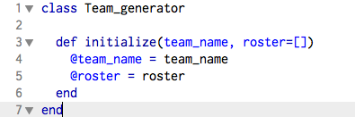
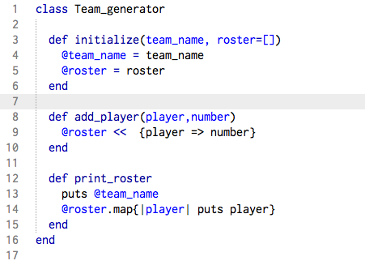
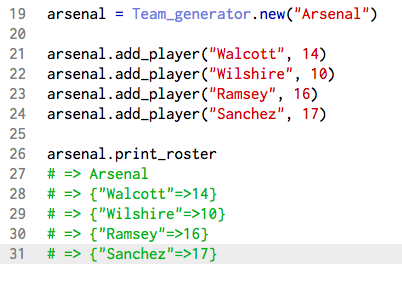

Experimenting with Ruby Classes
Ruby is an object oriented programming language. In other words, Ruby programs can operate in a real-world manner. We can create concepts such as “people”, “dogs”, or anything really. An object-oriented language such as Ruby allows you to create objects based upon these concepts. A great way to do so is by using classes. I will demonstrate by creating a sports team generator.
I will begin by defining the concept, “Team_Generator”, as a Ruby class (all classes have capital letters:
The initialize method will be executed every time you make a new instance of the class; essentially each time you use this class to create a new team you must pass the team name into the parameters as an argument. Within the initialize method, I created an instance variable of the team name. Instance variables differ from regular variables in that they can be used within the scope of the class and they begin with “@.” I initialized the roster as an empty array with which I will later fill with all the players and their respective numbers.
Now I'll complete the class by adding methods that add players to the roster and print the roster:
The two methods, add_player and print_roster, are instance methods of the class Team_Generator. Instance methods are defined within a class and can be used by all instances of that class. Now I will create one of my favorite soccer teams, Arsenal, and add some players to show you how the class works:
